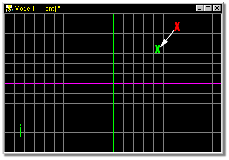
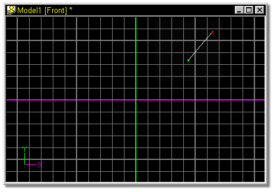

Each end of a spline is held by a control point. Control points indicate
where you can click to move or adjust a spline. To add a spline, click the Add
button on the tool panel, then point inside the appropriate window, press the
mouse button, and while holding the button down, move the mouse.
Each end of a spline is held by a control point. Control points indicate
where you can click to move or adjust a spline. To add a spline, click the Add
button on the tool panel, then point inside the appropriate window, press the
mouse button, and while holding the button down, move the mouse.
Where you click determines where a new spline will be added. If you click near an existing control point, a new spline will be added to the existing one. The side of the existing control point that you click near determines which side the new control point will be added to. When you want to add to an existing spline, you must point very near an existing control point, otherwise, you will start a new spline.
Normally, each time you wish to add another control point you need to click the Add button for each point you wish to add.
The default keyboard shortcut key for adding control points is A.

Click the Add Control Point button, then click in a model window (red X) and hold the mouse button.

Drag the mouse in the direction that the white arrow is pointing and release the mouse (green X).
The resulting spline:

Related Topics:
Attaching Control Points
Add_Lock
Break Spline
Delete Control Point
Detach Point
Insert Control Point
Smooth
Peak
Magnitude
Bias